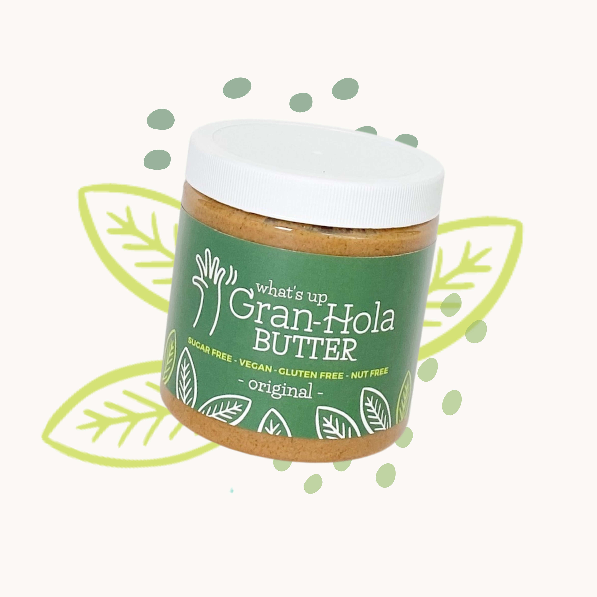
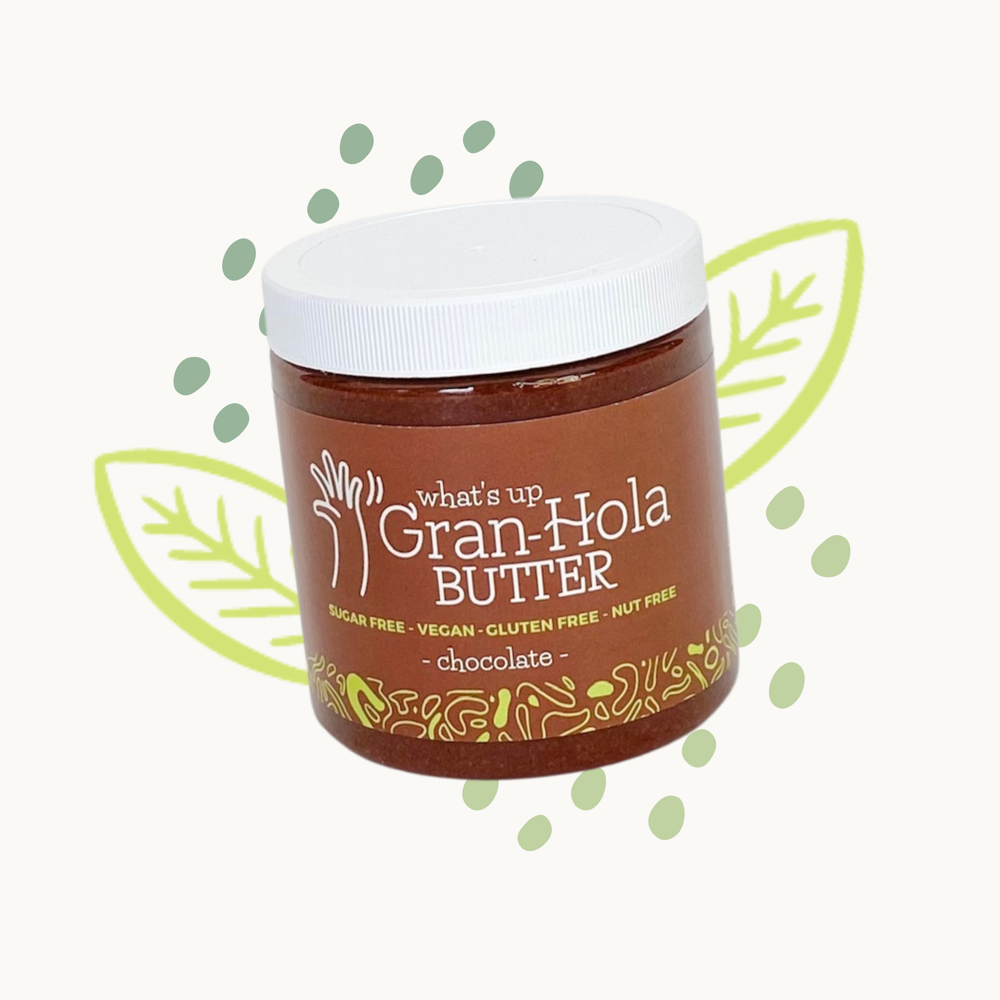
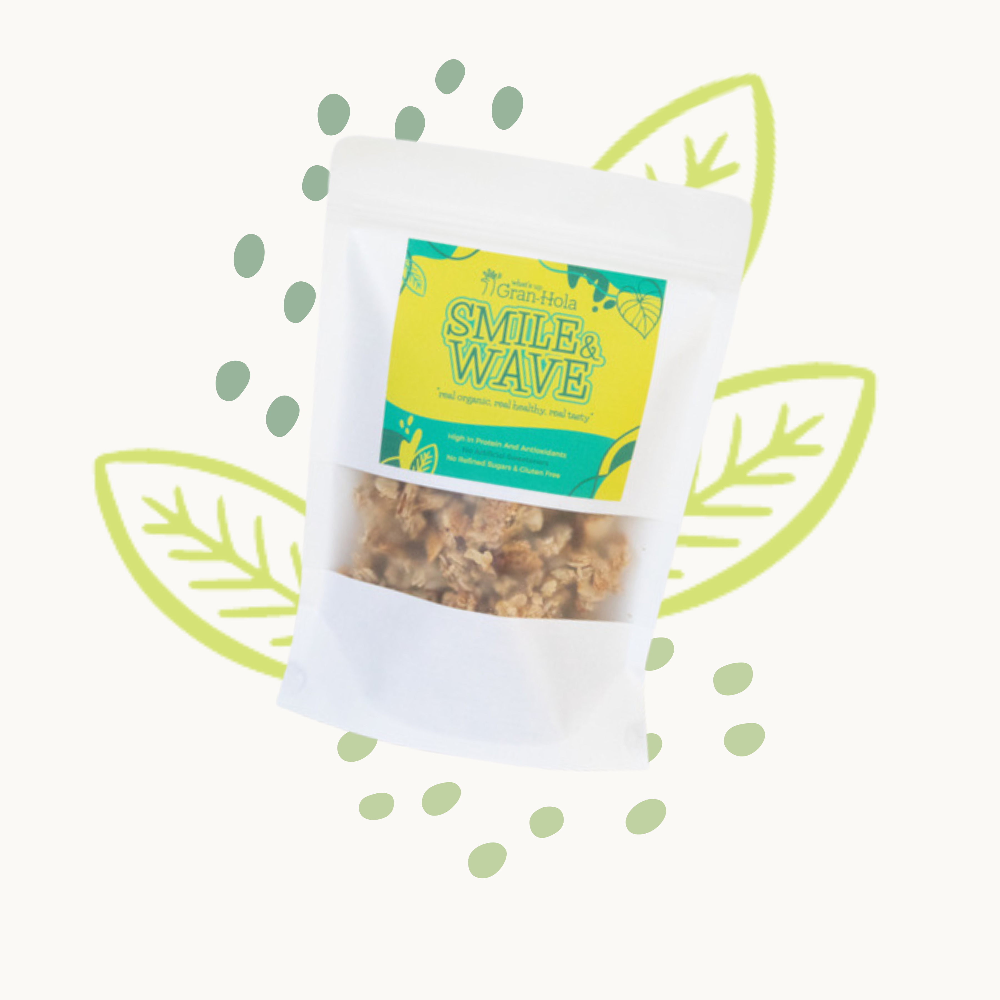
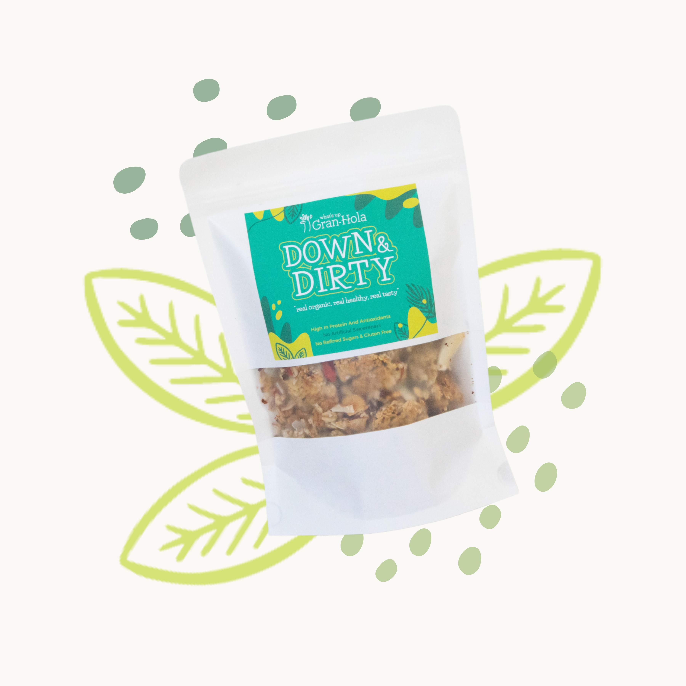

Curated luxury for your new beginning
Integrate our curated luxury pieces with your existing Zola, Amazon, or other registry in four simple steps.

Explore our carefully curated selection of vintage crystal, fine glassware, and timeless pieces perfect for your new home.

Choose the luxury items that speak to your style. Each piece is selected for its quality, heritage, and lasting beauty.

Simply copy the product name, description, and link from our site to add to your existing registry platform.

Paste the details into your Zola, Amazon, or other registry using their "Add from any store" feature. Your guests can now gift you luxury pieces that will last a lifetime.
Timeless treasures for discerning couples. Each piece is a celebration of refined taste and enduring elegance.
A masterpiece of cut crystal craftsmanship. This stunning statement piece catches the light beautifully, transforming any bouquet into a work of art. Perfect for your dining table or entrance hall.
$425
Celebrate life's finest moments with these exquisite hand-blown crystal flutes. Set of four, each piece a testament to French luxury and savoir-faire.
$380
An elegant six-piece vintage tea service featuring delicate floral patterns and gold accents. Transform your Sunday afternoons into refined rituals.
$295
A striking decanter with six matching tumblers. Perfect for hosting intimate gatherings or quiet evenings together. The geometric cuts create mesmerizing light patterns.
$465
A sculptural centerpiece that embodies Art Deco elegance. This frosted crystal bowl is as much art as it is functional, elevating any table setting.
$520
A carefully curated set of eight mid-century cocktail glasses. Each piece tells a story of glamorous entertaining and timeless sophistication.
$340
Building a home is about more than furniture and fixtures—it's about surrounding yourselves with pieces that reflect your shared story and values.
Start with the essentials that elevate daily life: fine crystal stemware for celebratory toasts, a statement vase that transforms fresh flowers into art, and glassware that makes every meal feel special. These aren't mere objects—they're the backdrop to your life together.
The beauty of vintage crystal and fine glassware lies in their timelessness. Unlike trends that fade, these pieces grow more precious with age. Each dinner party, anniversary celebration, or quiet Sunday morning becomes part of their story—and yours.
Choose pieces that will grace your table for decades to come. Hand-cut crystal, vintage porcelain, and antique glassware represent a commitment to craftsmanship and sustainability. These are heirlooms in the making, destined to be passed down through generations.
"The objects we live with should bring joy every single day—not just on special occasions."
Begin with what speaks to you. A set of champagne flutes for New Year's Eve. A crystal bowl for your dining table. A vintage tea service for lazy weekend mornings. Let your collection grow organically, each piece chosen with intention and love.
When you gift crystal and vintage pieces, you're offering more than a beautiful object—you're giving a piece of history, a touch of luxury, and the promise of cherished memories.
Crystal has graced the tables of royalty and celebrated families for centuries. Its brilliance doesn't diminish with time; rather, each use adds to its provenance. A crystal decanter becomes the vessel for anniversaries celebrated, milestones toasted, and quiet evenings shared. It's a gift that appreciates in sentimental value with every passing year.
Every vintage piece in our collection carries its own history. That Waterford vase may have once held roses in a Dublin drawing room. Those Baccarat flutes could have clinked together at Parisian celebrations. When you gift these pieces, you're adding a new chapter to their story—the beginning of a couple's journey together.
Consider thoughtful combinations that enhance the newlyweds' lifestyle:
The most meaningful gifts serve the couple long after the wedding. These pieces become part of their daily rituals and special celebrations—morning coffee in vintage teacups, anniversary champagne in Baccarat flutes, holiday dinners showcased by crystal centerpieces. You're not just giving a gift; you're contributing to the fabric of their shared life.
"The finest gifts endure, growing more beautiful and meaningful with each passing year."
Discover timeless pieces for your new life together
Explore Our Registry Guide